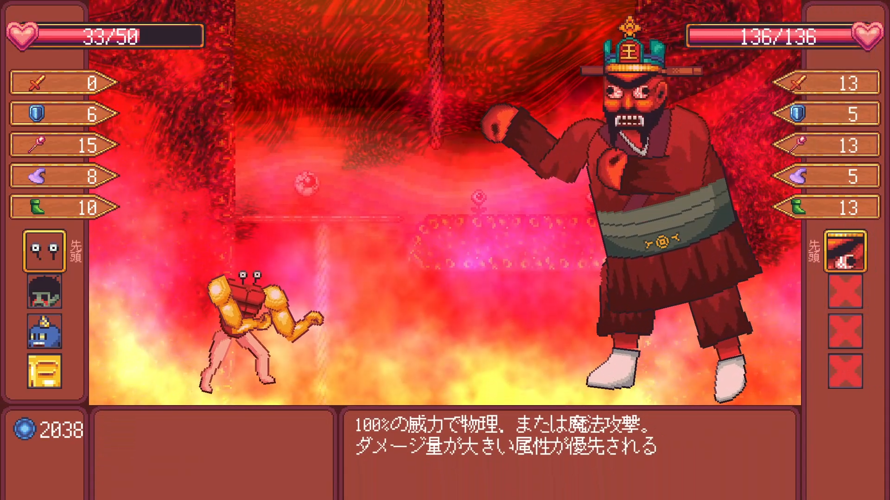

地獄へ落ちた主人公が天国を目指すため力づくで登り詰めるゲーム。
ランダムに生成されたダンジョンを探索し、扉を目指しましょう。
道中で出会う敵を「バラバラ」にし、
敵の体のパーツを自分の体にくっつけることで自分の体をカスタマイズすることができます。
| ジャンル | ローグライクRPG |
|---|---|
| 対応機種 | PC |
| 制作人数 | 個人 |
| 制作開始年度 | 2年生 |
| 制作期間 | 2021年8月16日 ～ 2022年2月24日 |
| Download | リンク |
 |
||
|---|---|---|
|  |  |
KARAGEの時の反省を活かし、「企画」「レベルデザイン」を凝り、「保守性の高いプログラム」を意識しました。
KARAGEでは頭カラアゲである理由がありませんでしたが、獄落道中では体をもぎ取ることの意味、楽しさを意識して企画をとことん練り、
また、レベルデザインにも気を配り万人に楽しめるようステータスを割り振りました。
プログラムに関してはInterfaceやServiceLocator、MVP設計などを用いてプログラム間の疎結合化を計りました。
Zenject等のDIコンテナやAssembly Defintitionについては勉強するのはまだ先ですが、設計に関する考え方を初めて認識することができました。
V実況者、にわりんさんに実況してもらいました！
自作ゲーム、獄落道中を実況してもらいました！
— Daiki_Shibata_Gamedev (@daiki_shibata1) November 6, 2021
めちゃくちゃプレイ上手でした…https://t.co/2N070Xh48R
2Dグラフィックス賞、砂守岳央賞を頂きました！
#GC甲子園
— Daiki_Shibata_Gamedev (@daiki_shibata1) February 28, 2022
ゲームクリエイター甲子園の特別審査員賞「砂守岳央賞」と、「2Dグラフィックス賞」を頂きました！
トロフィーの見た目かっこいい…
人生初トロフィー、家宝にしようと思います。 pic.twitter.com/0UbfjQEMqx
インタビューを受けました！
#GC甲子園
— Daiki_Shibata_Gamedev (@daiki_shibata1) May 9, 2022
GC甲子園2021の2Dグラフィック賞を獲得した件についてインタビューを受けました！
１、２年みたいに今年も何か賞取りたいなあ… https://t.co/AIasesKhiF